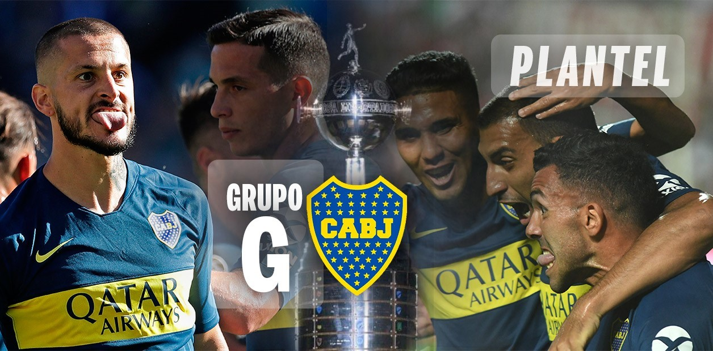
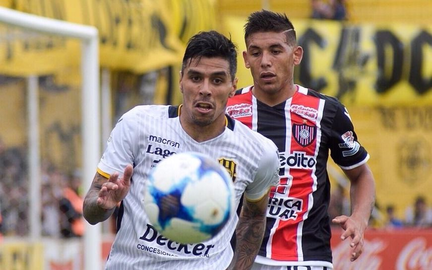

Boca viajara a Brasil para enfrentarse el proximo martes 02 de abril al equipo que dirige técnicamente Tiago Nunes. El equipo brasilero abtuvo una victoria por 4-0 a Wilstermann en su ultima presentacion y se acomodaron en la tabla tras haber perdido contra Deportes Tolima en el debut.

Gano el Aurinegro
Olimpo venció 2-1 a Chacarita y se ilusiona
Olimpo derrotó esta tarde 2-1 a Chacarita, en el Roberto Carminatti, por la 22ª fecha de la B Nacional 2018/19.En la próxima fecha, Olimpo visitará a Deportivo Morón, que también está peleando por la permanencia.

B Metropolitana
Quienes ascienden?
Atlanta le ganó a Fénix y se metió en zona de ascenso, mientras que UAI Urquiza igualó con San Miguel, 0-0; y Defensores Unidos de Zárate le ganó a Comunicaciones 1-0. Por otro lado Instituto logró un gran triunfo en Santiago del Estero.El Metropolitano esta picante, ninguno va a regalar nada, la consagracion no es para flojitos.